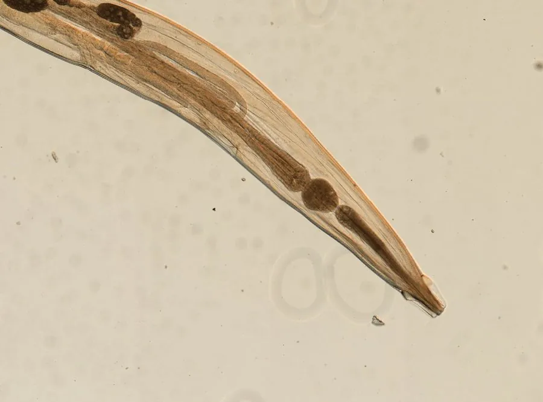

其他无脊椎动物 · 动物界
蛲虫 Enterobius vermicularis

儿童中一种常见的肠道寄生虫，夜间在肛周产卵引起瘙痒，通过手口传播，勤洗手和清洁衣物可有效预防。
- 分类
- 门线虫动物门纲色矛纲目尖尾目科尖尾科属蛲虫属
- 栖息环境
- 成虫寄生在人体盲肠和结肠，虫卵在肛周皮肤上发育
- 地理分布
- 全球分布，儿童感染较为常见
- 保护级别
- 暂无评估；常见肠道寄生虫
物种志
蛲虫成虫体形细小，呈乳白色，雌虫长约 8–13 mm，尾部细长尖锐，雄虫更小，长约 2–5 mm，尾部卷曲。它寄生在人体盲肠和结肠内，靠取食肠道内容物为生，头部附着在肠壁上。
雌虫在夜间爬出肛门，在肛周皮肤上产卵，引起剧烈瘙痒，患者抓挠后虫卵附着在手指和指甲上，再经口感染，形成自体重复感染；虫卵也可通过衣物、床单、玩具等传播。蛲虫病在儿童中很常见，主要表现为夜间肛门瘙痒、睡眠不安，有时可见白色小虫。预防的关键是勤洗手、勤剪指甲、不吮手指，勤换洗内衣裤和床单，玩具定期清洗，家庭成员同时治疗可减少重复感染，确诊后需在医生指导下用药。
形态与习性
- 食性寄生在肠道内，取食肠内容物
- 体长雌虫约 8–13 mm，雄虫约 2–5 mm
- 产卵雌虫夜间爬出肛门，在肛周皮肤产卵
- 感染途径虫卵经手指、衣物、玩具等经口传播
- 危害夜间肛周瘙痒、睡眠不安，可反复感染
- 预防勤洗手剪指甲、勤换洗衣物床单、玩具定期清洗
趣味知识
- 蛲虫雌虫会在夜间爬到肛门附近产卵，所以夜里特别痒。
- 抓挠后虫卵沾到手上，再经口进入体内，容易反复感染。
- 勤洗手、勤换内衣裤，能大大减少蛲虫的传播。